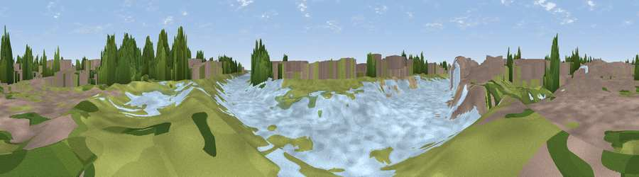

Viewpoint near Boston
#45412 in England · top 87% of its area beats it · near BostonWhere it is
The exact computed spot (TF 33619 43060). Click the marker for map links.
The view, rendered

A 360° render of this exact spot computed from the terrain model, tree cover and land cover — summer colours, afternoon light, calibrated against photographs of famous viewpoints. Real trees, hedges and buildings will differ in detail.
The panorama
Grey silhouette: terrain skyline in each direction (720 bearings, Earth curvature and refraction included). Dashed green: skyline with trees (+15 m) and buildings (+8 m) as obstacles. Blue strip: how far the ground is visible on each bearing.
Where the view opens
Wedge length = distance to the farthest visible ground on that bearing (vegetation-aware). Rings at 10, 25 and 50 km.
What fills the view
36% grassland · 29% water · 27% built-up · 6% woodland · 1% cropland · 1% bare ground
Angular shares of the visible panorama (visual magnitude), not map area. Landscape diversity 0.59 (0–1 Shannon).
Key numbers
More beautiful places nearby
The staircase of upgrades: each row has a higher view potential than everything closer. Driving times are estimates from straight-line distance, calibrated against real road routing — check an actual route before setting out.
| Place | Direction | Drive | Score |
|---|---|---|---|
| Viewpoint near Fishtoft | SSE · 2 km | ~5 min | 19.3 |
| Viewpoint near Fishtoft | SSE · 6 km | ~12 min | 24.5 |
| Viewpoint near Fishtoft | ESE · 7 km | ~15 min | 37.5 |
| Grantam Point | N · 21 km | ~35 min | 58.0 |
| Viewpoint near East Keal | NNE · 21 km | ~36 min | 66.0 |
| Viewpoint near Belvoir | W · 52 km | ~74 min | 70.8 |
| Viewpoint near Claxby | NNW · 57 km | ~79 min | 71.5 |
| Broombriggs Hill | WSW · 87 km | ~111 min | 74.4 |
52.96826, -0.01183 · source: osm peak · position refined by local search. Computed location — check access rights before visiting.